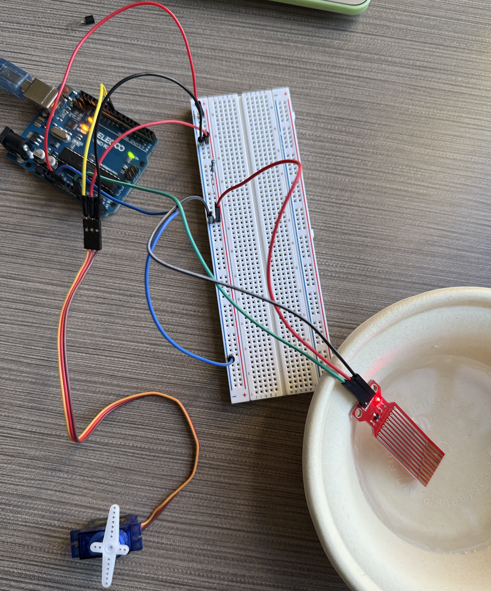
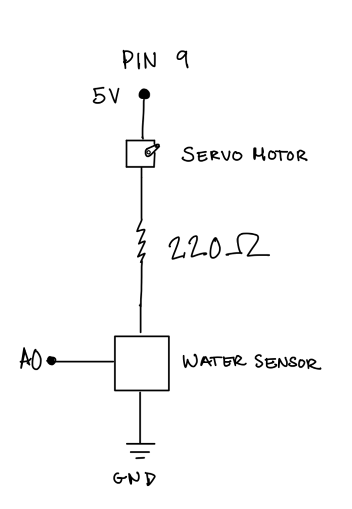
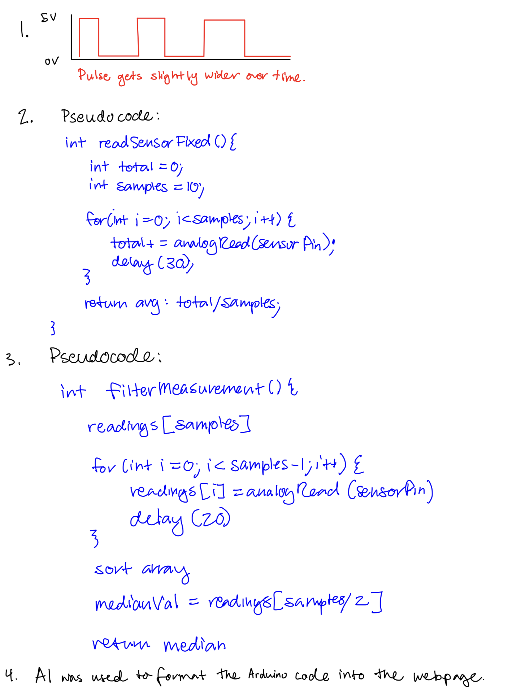

In Assignment 4, I created a prototype where the motor moves when the sensor is submerged into water.
Here is all the documentation for assignment 4!
Overview Photo:


Here is a photo of the circuit I put together. The first photo is an overview of the circuit, and the second shows the water sensor submerged in water.
Schematic:

Here is the schematic diagram I drew for this assignment. This schematic includes the water sensor as the input and the servo motor as the output. I chose 220 Ω resistors because after calculating the resistance using Ohm's Law and taking into account the voltage drops across the resistors, I found that 220 Ω would allow the current that passes through the circuit to stay under 40mA.
Code Snippet
//Include the Servo library
#include <Servo.h>
//declare the analog pin connected to the water sensor
int waterSensorPin = A0;
//declare the servo pin
int servoPin = 9;
//create the servo object
Servo myServo;
//set the sensor reading variable
int sensorValue = 0;
//set servo position variable
int servoPos = 0;
void setup() {
//initialize serial communication
Serial.begin(9600);
//attach the servo to the pin
myServo.attach(servoPin);
}
void loop() {
//read the water sensor value
sensorValue = analogRead(waterSensorPin);
//map the sensor value to servo position (0-180 degrees)
servoPos = map(sensorValue, 200, 800, 0, 180);
servoPos = constrain(servoPos, 0, 180);
//move the servo to the new position
myServo.write(servoPos);
//print sensor value and servo position to serial monitor
Serial.print("Sensor: ");
Serial.print(sensorValue);
Serial.print(", Servo: ");
Serial.println(servoPos);
//small delay for stability
delay(200);
}
Additional Questions
